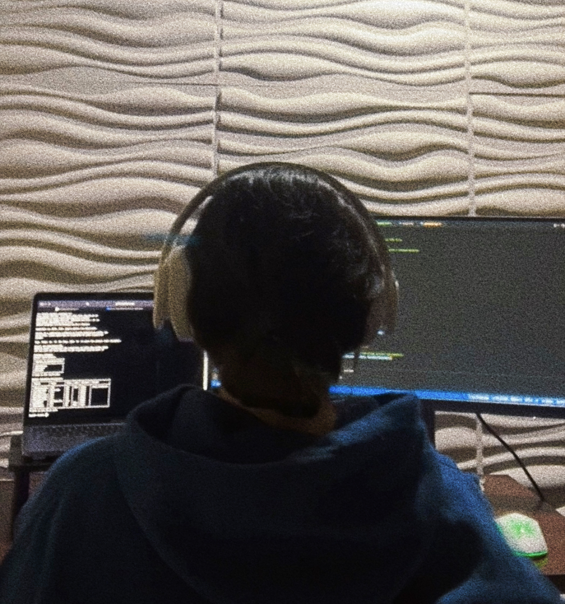

Claudbits
The backstory

During the pandemic, programming classes felt more complicated than usual. I started to have doubt in my knowledge and my skills. Though, I was able to have a good support system
including friends and great people in the field. During this time I was able to to participate in many workshops, seminars, and development opportunities that helped me grow in
the programming field. This motivated me to do the same for others.
A year after, on June 2021, I started claudbits (formerly known as claudcodes) where I shared programming concepts in a more simplified manner, including personal and professional
development strategies with no additional cost. This project had to be put on pause for a while due to the amount of academic workload though the end goal is still the same,
to keep sharing accessible programming content for all. Check out claudbits here!